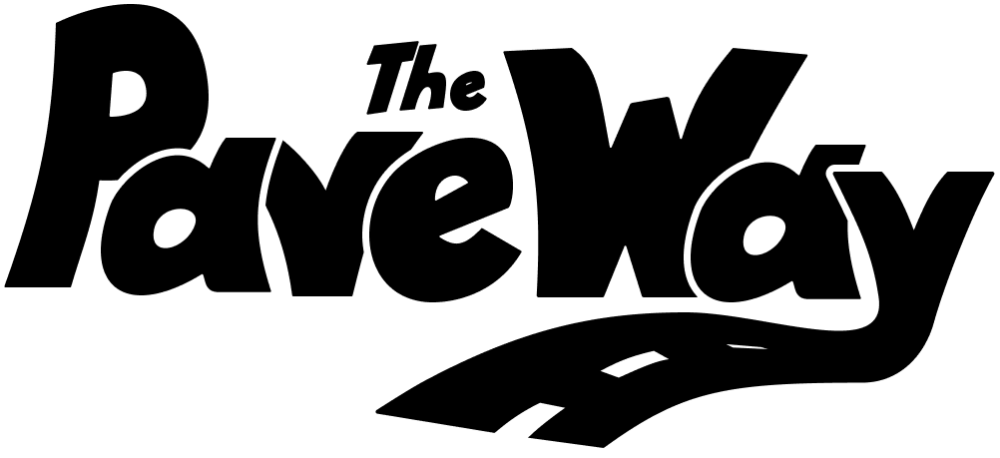

A road network building game
2-4 players
ages 8+
30-45 min
5 min to learn
The rules are simple, build roads to complete routes. But with so much flexibility in how to complete the routes, the only limit is your imagination! ...and your budget
In this fast paced game, the board is constantly evolving, and your strategy is going to need to keep up! With new goals constantly appearing and your competitors closing in. Do you have what it takes to out-smart and out-pace your opponents?
Each road is an investment for future opportunities, a road only used once is a wasted road. So plan wisely and always reuse all of your existing roads even if it makes you dizzy!
You may come close to going bankrupt, but if you plan wisely your income will start to grow exponentially because of a network effect.
Road networks grow in a very organic way. It's fun to watch them slither across the board reaching out for the next closest goal.
The game doesn't end till every city is connected to every other city, leaving you with a unique creation of roads weaving in and out.